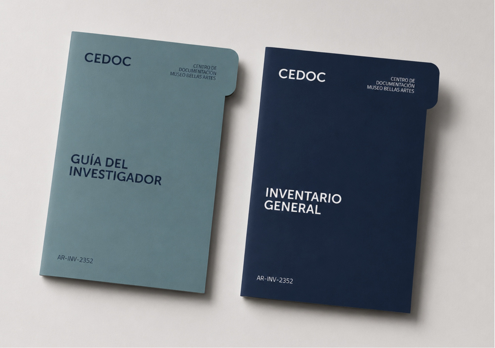
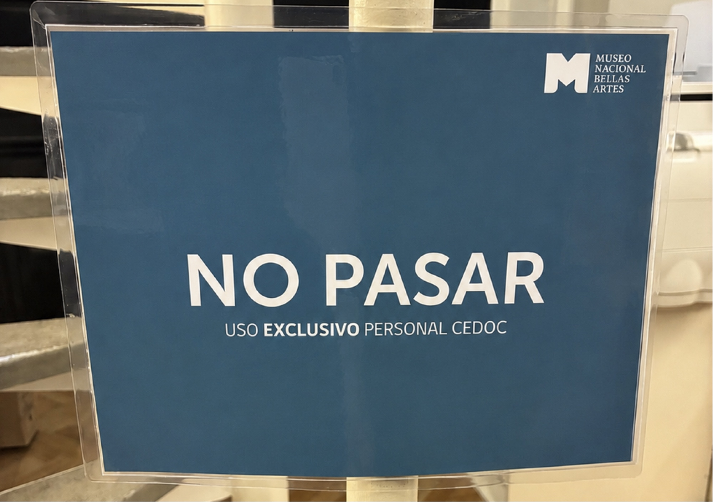
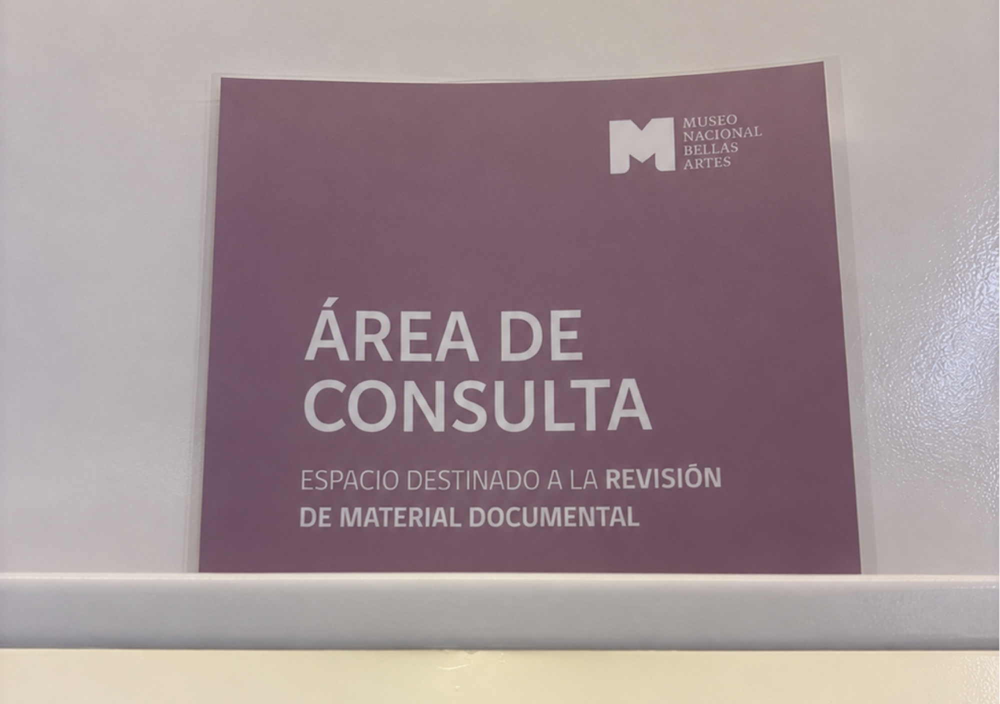
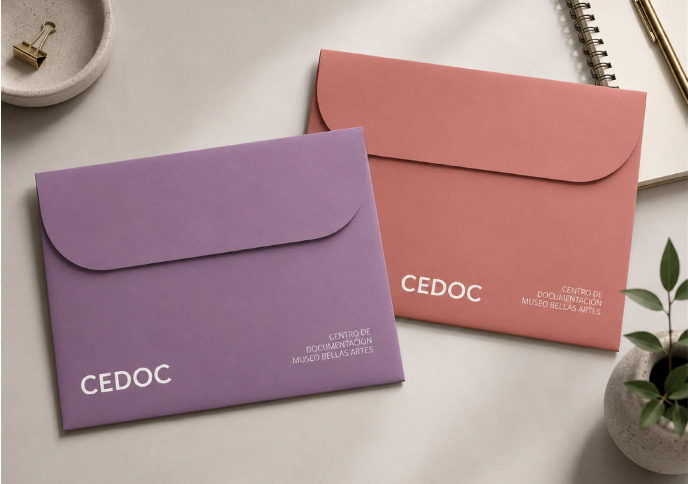
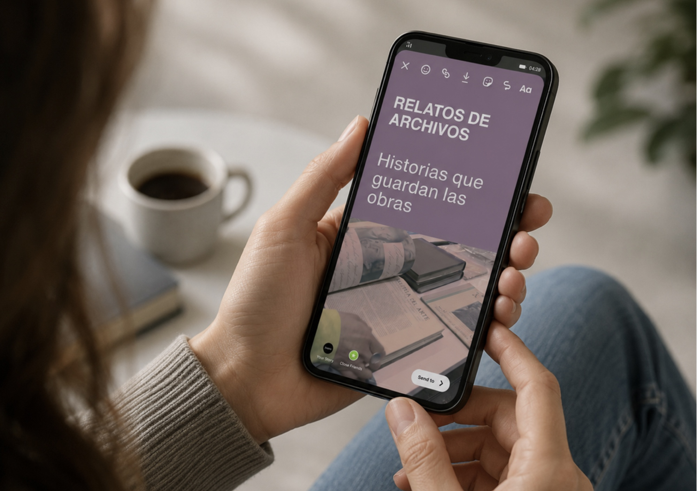
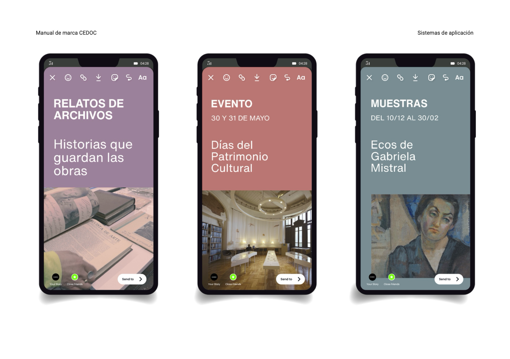

Vestigio
Identidad visual para el Centro de Documentación del Museo Nacional de Bellas Artes.
Colaboradores: Alinette Galdames y Constanza Díaz
Más sobre el proyecto
Una identidad para el archivo y la memoria.
La propuesta busca fortalecer la visibilidad y orientación del CEDOC, y facilitar el acceso a sus servicios y recursos.
El sistema reúne logotipo, color, tipografía y aplicaciones para organizar la información en soportes impresos y digitales.
Galería
Prototipos y aplicaciones seleccionadas del manual de marca CEDOC.





